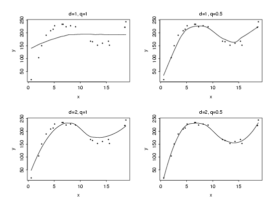

|
4.
Process Modeling
4.4. Data Analysis for Process Modeling 4.4.2. How do I select a function to describe my process?
|
|||
| Functional Form Not Needed, but Some Input Required | Although many modern regression methods, like LOESS, do not require the user to specify a single type of function to fit the entire data set, some initial information still usually needs to be provided by the user. Because most of these types of regression methods fit a series of simple local models to the data, one quantity that usually must be specified is the size of the neighborhood each simple function will describe. This type of parameter is usually called the bandwidth or smoothing parameter for the method. For some methods the form of the simple functions must also be specified, while for others the functional form is a fixed property of the method. | ||
| Input Parameters Control Function Shape | The smoothing parameter controls how flexible the functional part of the model will be. This, in turn, controls how closely the function will fit the data, just as the choice of a straight line or a polynomial of higher degree determines how closely a traditional regression model will track the deterministic structure in a set of data. The exact information that must be specified in order to fit the regression function to the data will vary from method to method. Some methods may require other user-specified parameters require, in addition to a smoothing parameter, to fit the regression function. However, the purpose of the user-supplied information is similar for all methods. | ||
| Starting Simple still Best | As for more traditional methods of regression, simple regression functions are better than complicated ones in local regression. The complexity of a regression function can be gauged by its potential to track the data. With traditional modeling methods, in which a global function that describes the data is given explictly, it is relatively easy to differentiate between simple and complicated models. With local regression methods, on the other hand, it can sometimes difficult to tell how simple a particular regression function actually is based on the inputs to the procedure. This is because of the different ways of specifying local functions, the effects of changes in the smoothing parameter, and the relationships between the different inputs. Generally, however, any local functions should be as simple as possible and the smoothing parameter should be set so that each local function is fit to a large subset of the data. For example, if the method offers a choice of local functions, a straight line would typically be a better starting point than a higher-order polynomial or a statistically nonlinear function. | ||
| Function Specification for LOESS | To use LOESS, the user must specify the degree, \(d\), of the local polynomial to be fit to the data, and the fraction of the data, \(q\), to be used in each fit. In this case, the simplest possible initial function specification is \(d=1\) and \(q=1\). While it is relatively easy to understand how the degree of the local polynomial affects the simplicity of the initial model, it is not as easy to determine how the smoothing parameter affects the function. However, plots of the data from the computational example of LOESS in Section 1 with four potential choices of the initial regression function show that the simplest LOESS function, with \(d=1\) and \(q=1\), is too simple to capture much of the structure in the data. | ||
| LOESS Regression Functions with Different Initial Parameter Specifications |  | ||
| Experience Suggests Good Values to Use | Although the simplest possible LOESS function is not flexible enough to describe the data well, any of the other functions shown in the figure would be reasonable choices. All of the latter functions track the data well enough to allow assessment of the different assumptions that need to be checked before deciding that the model really describes the data well. None of these functions is probably exactly right, but they all provide a good enough fit to serve as a starting point for model refinement. The fact that there are several LOESS functions that are similar indicates that additional information is needed to determine the best of these functions. Although it is debatable, experience indicates that it is probably best to keep the initial function simple and set the smoothing parameter so each local function is fit to a relatively small subset of the data. Accepting this principle, the best of these initial models is the one in the upper right corner of the figure with \(d=1\) and \(q=0.5\). | ||

{kind=link}